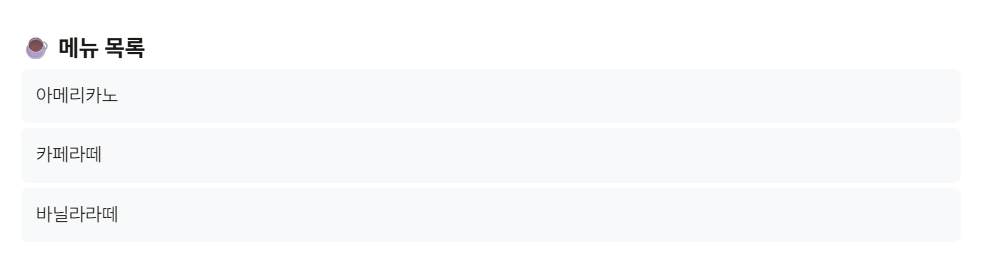
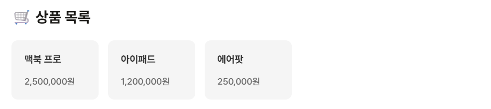

01
map() 함수의 활용
JSX 내부에서는 JavaScript의 for 문을 직접 사용할 수
없습니다. 따라서 리액트에서는 배열의 요소를 순회하며 JSX를 반환하는
map() 메서드를 활용합니다.
- 동작 방식: 배열의 데이터를 순회하며 각 요소를 기반으로 새로운 JSX 엘리먼트를 생성하여 반환합니다.
-
Key 속성의 필수성: 리액트가 리스트 항목의 변경,
추가, 삭제 여부를 식별하여 성능을 최적화할 수 있도록 고유한
key를 부여해야 합니다.
02
Key의 올바른 사용 방법
key는 각 항목을 고유하게 식별하는 신분증과 같으며 다음
규칙을 준수해야 합니다.
2.1. Key 선정 기준
리스트 내에서 유일하며 데이터가 업데이트되어도 변하지 않는 값을 사용합니다. 일반적으로 DB의 고유 ID를 활용합니다.
2.2. 배열 인덱스(Index) 사용 주의
- 허용되는 경우: 순서가 고정된 정적 리스트일 때만 예외적으로 사용합니다.
- 지양해야 하는 경우: 순서가 바뀌거나 항목이 동적으로 추가/삭제되는 경우 렌더링 오류의 원인이 됩니다.
03
객체 배열 렌더링 예시

객체의 고유 ID를 key로 사용하여 리스트를 구현한
예시입니다.
function MenuList() { const menus = [ { id: 1, menu: "아메리카노" }, { id: 2, menu: "카페라떼" }, ]; return ( <ul> {menus.map((item) => ( <li key={item.id}>{item.menu}</li> ))} </ul> ); }
04
실습 과제 및 컴포넌트 분리

효율적인 관리를 위해 리스트 항목을 개별 컴포넌트로 분리하고 디자인을 적용합니다.
4.1. 컴포넌트 구조화
// ProductCard.jsx function ProductCard({ product }) { return ( <div className="product-card"> <h3>{product.name}</h3> <p>{product.price.toLocaleString()}원</p> </div> ); }
4.2. 주요 스타일 정의 (CSS)
.product-list { display: flex; } .product-card { background-color: #f5f5f5; padding: 10px 20px; border-radius: 10px; } .product-card:hover { background-color: lightyellow; }
Comments